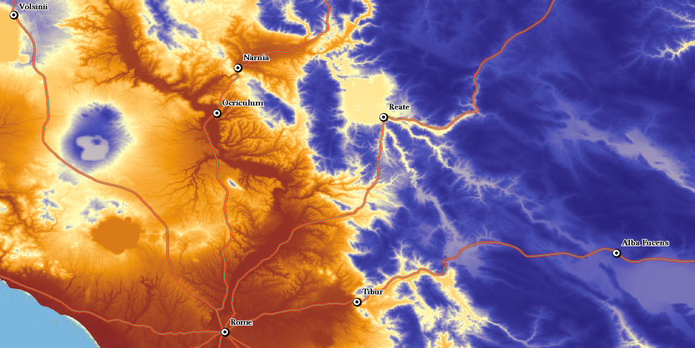
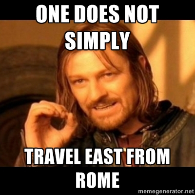

← All writingDigital Humanities Specialist · 2012-03-19 · 1 min readTopography Error: Too Much Topography!Elijah MeeksOriginally published at Digital Humanities Specialist. This edition preserves the original text and historical context. An attempt to illustrate something that may be better expressed through a less traditional visualization.  ← Browse more writing